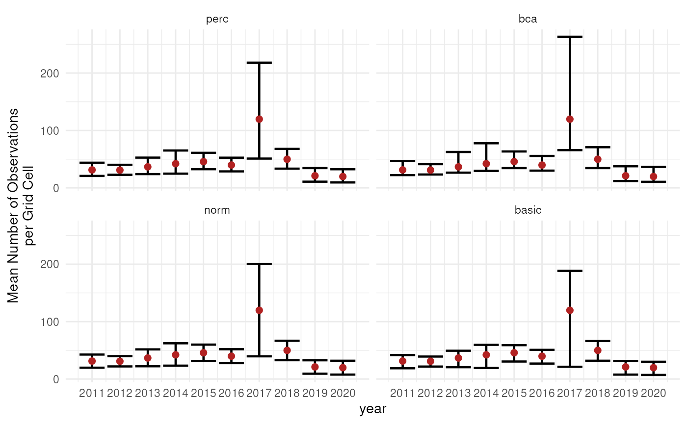

Whole-cube Bootstrap versus Group-specific Bootstrap
Source:vignettes/articles/whole-cube-versus-group-specific-bootstrap.Rmd
whole-cube-versus-group-specific-bootstrap.RmdIntroduction
When calculating biodiversity indicators from a cube, we often want confidence intervals (CIs) using bootstrapping. In dubicube, bootstrapping can be done in two ways:
- Whole-cube bootstrapping: resampling all rows in the cube, regardless of grouping.
- Group-specific bootstrapping: resampling rows only within a group of interest (e.g., a species, year, or habitat).
The choice between these two methods directly affects how confidence intervals should be interpreted:
- Other indicators combine information across groups (e.g., community richness, turnover, or multi-species metrics). These require whole-cube bootstrapping to preserve correlations.
- Some indicators are calculated independently per group (e.g., species-specific or year-specific metrics). For these, group-specific bootstrapping is usually more appropriate.
In this tutorial, we explain the differences, discuss the strengths and limitations of each method, and provide a worked example where group-specific bootstrapping is the correct choice.
Whole-cube bootstrap
Definition: Resample all rows in the cube, regardless of species, year, or other grouping.
Advantages:
- Preserves correlations between groups (e.g., species co-occurrence, temporal dependencies).
- Appropriate for indicators that depend on multiple groups together (community-level metrics, multi-species diversity).
Disadvantages:
- Rare groups may end up with zero rows in some bootstrap replicates, leading to wider or undefined CIs.
- Variance for small groups may be inflated.
Use case examples:
- Community richness per site or habitat.
- Multi-species indicators (e.g., average occupancy across species).
- Temporal turnover indicators that rely on multiple years.
Implementation in dubicube
- Default use like tutorials and examples.
Group-specific bootstrap
Definition: Subset the cube by the group of interest (e.g., species or year), then resample rows only within that group.
Advantages:
- Guarantees each replicate has rows for the group → stable CIs.
- Reflects within-group variability only.
Disadvantages:
- Ignores correlations with other groups.
- Variance may be slightly underestimated if the group’s presence is correlated with other groups.
Use case examples:
- Species-specific occupancy or habitat preference metrics.
- Year-specific indicators (e.g., annual richness).
- Small or rare groups where zero-row replicates would be problematic.
Implementation in dubicube
- Perform bootstrapping and interval calculation per group (e.g. using
a for loop or
lapply()). - See further.
An example of a group-specific analysis
We reuse the example introduced in bootstrap confidence interval calculation tutorial where we calculate confidence limits for the mean number of observations per grid cell per year for birds in Belgium between 2011 en 2020 using the MGRS grid at 10 km scale.
# Load packages
library(ggplot2) # Data visualisation
library(dplyr) # Data wrangling
# Data loading and processing
library(frictionless) # Load example datasets
library(b3gbi) # Process occurrence cubes
library(dubicube) # Analysis of data quality & indicator uncertaintyLoading and processing the data
We load the bird cube data from the b3data data package using frictionless (see also here).
# Read data package
b3data_package <- read_package(
"https://zenodo.org/records/15211029/files/datapackage.json"
)
# Load bird cube data
bird_cube_belgium <- read_resource(b3data_package, "bird_cube_belgium_mgrs10")
head(bird_cube_belgium)
#> # A tibble: 6 × 8
#> year mgrscode specieskey species family n mincoordinateuncerta…¹
#> <dbl> <chr> <dbl> <chr> <chr> <dbl> <dbl>
#> 1 2000 31UDS65 2473958 Perdix perdix Phasi… 1 3536
#> 2 2000 31UDS65 2474156 Coturnix coturn… Phasi… 1 3536
#> 3 2000 31UDS65 2474377 Fulica atra Ralli… 5 1000
#> 4 2000 31UDS65 2475443 Merops apiaster Merop… 6 1000
#> 5 2000 31UDS65 2480242 Vanellus vanell… Chara… 1 3536
#> 6 2000 31UDS65 2480637 Accipiter nisus Accip… 1 3536
#> # ℹ abbreviated name: ¹mincoordinateuncertaintyinmeters
#> # ℹ 1 more variable: familycount <dbl>We process the cube with b3gbi. First, we select 2000 random rows to make the dataset smaller. This is to reduce the computation time for this tutorial. We select the data from 2011 - 2020.
set.seed(123)
# Make dataset smaller
rows <- sample(nrow(bird_cube_belgium), 2000)
bird_cube_belgium <- bird_cube_belgium[rows, ]
# Process cube
processed_cube <- process_cube(
bird_cube_belgium,
first_year = 2011,
last_year = 2020,
cols_occurrences = "n"
)
processed_cube
#>
#> Processed data cube for calculating biodiversity indicators
#>
#> Date Range: 2011 - 2020
#> Single-resolution cube with cell size 10km ^2
#> Number of cells: 242
#> Grid reference system: mgrs
#> Coordinate range:
#> xmin xmax ymin ymax
#> 280000 710000 5490000 5700000
#>
#> Total number of observations: 45143
#> Number of species represented: 253
#> Number of families represented: 57
#>
#> Kingdoms represented: Data not present
#>
#> First 10 rows of data (use n = to show more):
#>
#> # A tibble: 957 × 13
#> year cellCode taxonKey scientificName family obs minCoordinateUncerta…¹
#> <dbl> <chr> <dbl> <chr> <chr> <dbl> <dbl>
#> 1 2011 31UFS56 5231918 Cuculus canorus Cucul… 11 3536
#> 2 2011 31UES28 5739317 Phoenicurus phoe… Musci… 6 3536
#> 3 2011 31UFS64 6065824 Chroicocephalus … Larid… 143 1000
#> 4 2011 31UFS96 2492576 Muscicapa striata Musci… 3 3536
#> 5 2011 31UES04 5231198 Passer montanus Passe… 1 3536
#> 6 2011 31UES85 5229493 Garrulus glandar… Corvi… 23 707
#> 7 2011 31UES88 10124612 Anser anser x Br… Anati… 1 100
#> 8 2011 31UES22 2481172 Larus marinus Larid… 8 1000
#> 9 2011 31UFS43 2481139 Larus argentatus Larid… 10 3536
#> 10 2011 31UFT00 9274012 Spatula querqued… Anati… 8 3536
#> # ℹ 947 more rows
#> # ℹ abbreviated name: ¹minCoordinateUncertaintyInMeters
#> # ℹ 6 more variables: familyCount <dbl>, xcoord <dbl>, ycoord <dbl>,
#> # utmzone <int>, hemisphere <chr>, resolution <chr>Analysis of the data
Let’s say we are interested in the mean number of observations per grid cell per year. We create a function to calculate this.
In contrast to the other tutorials, we now calculate this exclusively per year. Therefore, the group-specific bootstrap is more appropriate here. This is because our indicator (mean observations per year) depends only on variation within each year, and not on correlations across years.
# Function to calculate statistic of interest
# Mean observations per grid cell per year
mean_obs <- function(data) {
data %>%
group_by(year, cellCode) %>%
dplyr::mutate(x = mean(obs)) %>%
ungroup() %>%
dplyr::summarise(diversity_val = mean(x), .by = "year") %>%
as.data.frame()
}We get the following results:
mean_obs(processed_cube$data)
#> year diversity_val
#> 1 2011 31.28846
#> 2 2012 30.96842
#> 3 2013 36.65049
#> 4 2014 42.17143
#> 5 2015 45.76471
#> 6 2016 39.76068
#> 7 2017 119.70833
#> 8 2018 49.87963
#> 9 2019 21.06780
#> 10 2020 19.78689On their own, these values don’t reveal how much uncertainty surrounds them. To better understand their variability, we use bootstrapping to estimate the distribution of the yearly means. From this distribution, we can calculate bootstrap confidence intervals.
Group-specific bootstrapping
We use the bootstrap_cube() function to perform
bootstrapping (see also the bootstrap
tutorial). However, we now split the data per year and perform
bootstrapping per year using lapply(). We store the data
also in the output list to be used for interval calculation further
on.
bootstrap_results_group <- processed_cube$data %>%
split(processed_cube$data$year) %>%
lapply(function(cube) {
bootstrap_results <- bootstrap_cube(
data_cube = cube,
fun = mean_obs,
grouping_var = "year",
samples = 1000,
seed = 123,
processed_cube = FALSE
)
return(list(bootstrap_results = bootstrap_results, data = cube))
})
head(bootstrap_results_group[[1]]$bootstrap_results)
#> sample year est_original rep_boot est_boot se_boot bias_boot
#> 1 1 2011 31.28846 34.61538 31.40296 5.830663 0.1145
#> 2 2 2011 31.28846 20.95192 31.40296 5.830663 0.1145
#> 3 3 2011 31.28846 20.69231 31.40296 5.830663 0.1145
#> 4 4 2011 31.28846 29.25000 31.40296 5.830663 0.1145
#> 5 5 2011 31.28846 34.47115 31.40296 5.830663 0.1145
#> 6 6 2011 31.28846 32.90385 31.40296 5.830663 0.1145Group-specific interval calculation
Now we can use the calculate_bootstrap_ci() function to
calculate confidence limits (see also the bootstrap
confidence interval calculation tutorial). Because BCa interval
calculation relies on jackknifing, we also need to do this per group
using lapply().
ci_mean_obs_group_list <- bootstrap_results_group %>%
lapply(function(list) {
calculate_bootstrap_ci(
list$bootstrap_results,
grouping_var = "year",
type = c("perc", "bca", "norm", "basic"),
conf = 0.95,
data_cube = list$data, # Required for Bca
fun = mean_obs # Required for Bca
)
})
# Make interval type factor
ci_mean_obs_group <- bind_rows(ci_mean_obs_group_list) %>%
mutate(
int_type = factor(
int_type, levels = c("perc", "bca", "norm", "basic")
)
)
head(ci_mean_obs_group)
#> year est_original est_boot se_boot bias_boot int_type conf ll
#> 1 2011 31.28846 31.40296 5.830663 0.11450000 perc 0.95 20.83010
#> 2 2011 31.28846 31.40296 5.830663 0.11450000 bca 0.95 22.28181
#> 3 2011 31.28846 31.40296 5.830663 0.11450000 norm 0.95 19.74607
#> 4 2011 31.28846 31.40296 5.830663 0.11450000 basic 0.95 18.74600
#> 5 2012 30.96842 31.02205 4.566094 0.05363158 perc 0.95 22.80027
#> 6 2012 30.96842 31.02205 4.566094 0.05363158 bca 0.95 23.28024
#> ul
#> 1 43.83092
#> 2 46.74330
#> 3 42.60185
#> 4 41.74682
#> 5 40.21998
#> 6 41.32107We visualise the results.
ci_mean_obs_group %>%
ggplot(aes(x = year, y = est_original)) +
# Intervals
geom_errorbar(aes(ymin = ll, ymax = ul),
position = position_dodge(0.8), linewidth = 0.8) +
# Estimates
geom_point(colour = "firebrick", size = 2) +
# Settings
labs(y = "Mean Number of Observations\nper Grid Cell") +
scale_x_continuous(breaks = sort(unique(ci_mean_obs_group$year))) +
theme_minimal() +
facet_wrap(~int_type)